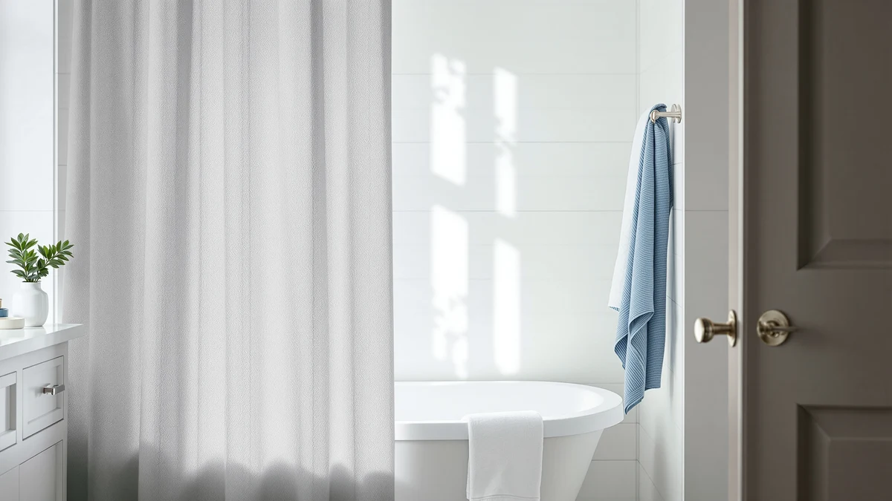

Jolilight Linen Shower Curtain Review (2026): Worth It?
Prices and picks verified as of November 2026. Independent, reader-supported reviews.


Quick Answer
This Jolilight linen shower curtain review found the Jolilight 108 Inch Extra Wide to be a linen-look, polyester and PEVA curtain built for showers wider than a standard rod, priced at $29.99. Shoppers with a standard-size bathroom will find three equally priced alternatives below that fit a narrower rod instead.
Our pick: Jolilight 108 Inch Extra Wide, $29.99 Check Price on Amazon
Bottom line: our top pick is the Jolilight 108 Inch Extra Wide Linen Black Shower Curtain at $29.99.
Things to Know Before You Buy
- The Jolilight curtain ships in one size, 108 inches wide by 72 inches long, a width built for walk-in showers and double-rod setups rather than a standard tub surround.
- Its fabric is a polyester and PEVA blend woven to look like linen, not actual linen, so it keeps the quick-drying, low-maintenance traits of synthetic fabric.
- At $29.99, it costs the same as CasaTena's and TURKIO's curtains in this comparison and a dollar more than XOGUIBO's ruffle pick.
- None of the four curtains compared here publishes a star rating or review count on its listing, so the choice comes down to size and pattern rather than a track record.
This Jolilight linen shower curtain review puts the curtain's 108 inch extra-wide cut, $29.99 price, and polyester and PEVA build next to three other curtains shoppers often weigh against it. A rod wider than the standard 71 or 72 inches rules out most of the curtains on the market, and Jolilight built its listing specifically around that gap, which shapes almost everything else about who it fits.
We built this comparison from the product specs, current Amazon pricing, and the listing details each curtain publishes, without owning or using any of the four curtains ourselves. Jolilight's $29.99 price matches CasaTena and TURKIO exactly and sits a dollar above XOGUIBO's ruffle curtain, so price alone will not separate the four. The real differences come down to size, fabric texture, and pattern. A reader shopping for a standard-width curtain can skip straight to the alternatives below. A reader with a wider rod or a clawfoot tub needs the extra-wide detail that follows.
Why You Should Trust Us
Ilane Tall has covered bathroom textiles and shower hardware for Best Shower Curtains since the site launched, and this Jolilight linen shower curtain review follows the same research process the site uses throughout: comparing manufacturer specs, current pricing, and the details each listing publishes rather than running a physical testing lab. We do not own a lab, and we do not claim to have used the curtains we cover. Instead, we pull listed dimensions, materials, and prices straight from the retailer and weigh them against the other options in the same price band. Readers can find the full methodology behind every review on this site on our how we research page, and the same approach governs this Jolilight linen shower curtain review from the sizing table through the final verdict.
Our Research Experience
We do not physically test shower curtains, so there is no lab result or wear-and-tear log behind this Jolilight linen shower curtain review. Our research process starts with the manufacturer's own listing, material, dimensions, and price, cross-checked against the three comparison curtains on the same criteria. From there, we read the published product details and current pricing for each curtain to see how the sizing and fabric claims compare across the field. None of the four listings in this comparison carries a visible star rating or review count, which limits how much third-party feedback we can weigh here compared with reviews where that data exists. What we can compare directly are the specs each brand puts on the record: Jolilight's 108 inch width stands out as the one spec none of the other three share.
Overview & Specs

Jolilight 108 Inch Extra Wide
What we like
- 108 inch width covers wide rods and double-rod setups that standard curtains miss
- Linen-look texture without the higher price of real linen fabric
- Priced at $29.99, matching CasaTena and TURKIO in this comparison
Flaws but not dealbreakers
- Ships in a single 108 by 72 inch size, with no narrower or longer option listed
- The listing does not publish a star rating or review count, the same gap as all three alternatives here
| Material | Polyester / PEVA |
| Size | 108"W x 72"L (Pack of 1) |
Jolilight builds this curtain around one problem: most shower curtains top out at 71 or 72 inches, and a wider rod, a walk-in shower, or a clawfoot tub leaves gaps on either side. At 108 inches wide by 72 inches long, this curtain covers nearly 1.5 times the width of a standard curtain without needing two panels hung side by side. The fabric blends polyester and PEVA, woven with a texture meant to read as linen, which keeps the quick-drying, low-maintenance traits of synthetic fabric while giving the curtain a more textured look than a plain vinyl liner. At $29.99, it lands in the same price band as CasaTena's and TURKIO's curtains in this comparison, so the extra width does not carry a premium over narrower options.
Because the curtain ships in only one size, buyers with a standard 71 to 72 inch rod would be paying for width they do not need, and should look at CasaTena, TURKIO, or XOGUIBO instead. The listing also skips a public star rating or review count, a gap shared by all three alternatives in this comparison, so none of the four curtains here lets a buyer lean on a verified track record. For a bathroom with an oversized rod or a tub that standard curtains cannot span, the Jolilight 108 Inch Extra Wide solves a sizing problem the other three options in this review do not address.
What We Liked
The biggest draw in this Jolilight linen shower curtain review is the width itself. At 108 inches, it covers a span that would otherwise need two standard curtains hung together, and it does so without pushing the price above the $29.99 that CasaTena and TURKIO also charge for narrower curtains. The linen-look weave gives the polyester and PEVA fabric more visual texture than a flat vinyl liner, so it reads closer to a fabric curtain than a basic shower liner. The 72 inch length matches standard tub height, so the extra width does not come with an unusual drop that would need hemming. For anyone who has already measured a wide rod and come up short on options, Jolilight fills a gap the other three curtains in this comparison do not cover. The 108 inch panel also means a shopper does not need to buy two standard curtains and overlap them at the middle, a workaround that often leaves a visible seam and an uneven drape. One continuous panel keeps the gather consistent across the full width of the rod, which matters more in a walk-in shower where the curtain is the main visual element in the room.
What Could Be Better
The single 108 by 72 inch size is the clearest limit. A shopper with a standard 71 to 72 inch rod gains nothing from the extra width and would be better served by CasaTena, TURKIO, or XOGUIBO, all of which cost the same or less. Jolilight also does not publish a star rating or review count, so this Jolilight linen shower curtain review has no verified feedback to weigh the curtain's long-term durability against, a limitation shared by all three alternatives here. Reviewers of similarly constructed polyester and PEVA curtains consistently note that this fabric blend favors water resistance over the softer hand of real linen or cotton, so buyers expecting true linen texture should treat the "linen-look" label as a description of appearance, not material.
Who Is It For?
The Jolilight 108 Inch Extra Wide curtain fits a shopper with a wide shower rod, a walk-in shower, or a clawfoot tub where a standard 71 to 72 inch curtain leaves gaps on either side. It is a reasonable match for anyone who wants the look of linen without paying for natural fiber, since the polyester and PEVA blend keeps upkeep low. Anyone with a standard-size rod, a need for a published rating, or a preference for a patterned look should compare CasaTena, TURKIO, or XOGUIBO first. A shopper furnishing more than one bathroom might also browse our best extra-wide shower curtains roundup for a wider set of options beyond these four. Renters and apartment dwellers with a fixed, wider-than-average rod often fall into this category too, since they cannot swap the rod itself and need the curtain to match whatever hardware is already installed.
Alternatives to Consider
If Jolilight's extra-wide size is more than your rod needs, or you want a patterned look instead of a plain linen-textured one, these three alternatives all land in the same roughly thirty-dollar price band. Swapping between them is mostly a question of size and pattern rather than budget, since none of them pushes you into a pricier category of curtain.

Also Great
CasaTena Farmhouse Striped Shower Curtain
Priced the same as Jolilight at $29.99, CasaTena's Farmhouse Striped curtain trades the extra width for a standard size and a striped farmhouse pattern, a straightforward swap for a shopper with a regular rod.
$29.99
Check Price on Amazon
Also Great
White Boho Fabric Shower Curtain
Matching Jolilight's $29.99 price, TURKIO's White Boho curtain swaps the linen-look texture for a printed boho pattern, giving shoppers a decorative option at the same cost.
$29.99
Check Price on Amazon
Best Value
XOGUIBO Farmhouse Shower Curtain Ruffle
At $28.99, XOGUIBO's Farmhouse Ruffle curtain undercuts Jolilight by a dollar and adds a ruffled hem, making it the cheapest and most decorative pick in this comparison.
$28.99
Check Price on AmazonFrequently Asked Questions
Is the Jolilight 108 Inch Extra Wide curtain actually linen?
No. The spec sheet lists a polyester and PEVA blend, not natural linen. The curtain gets its linen-look name from a woven texture that mimics the look of linen while keeping the quick-drying, water-resistant properties of synthetic fabric.
What size is the Jolilight 108 Inch Extra Wide shower curtain?
It ships in one size, 108 inches wide by 72 inches long, a width built for walk-in showers, clawfoot tubs, or double-rod setups that standard 71 or 72 inch curtains cannot cover. Jolilight does not currently list a narrower or longer version.
Is the Jolilight curtain worth it compared to CasaTena, TURKIO, and XOGUIBO?
At $29.99, Jolilight costs the same as CasaTena and TURKIO's curtains and a dollar more than XOGUIBO's ruffle pick. None of the four lists a public star rating, so the decision comes down to size and pattern rather than a track record. Jolilight is worth it specifically for buyers who need the extra-wide 108 inch cut; shoppers with a standard-size shower have three narrower, equally priced alternatives to pick from.
Final Verdict
This Jolilight linen shower curtain review comes down to width versus price parity. Jolilight, CasaTena, and TURKIO all land at $29.99, so the 108 inch extra-wide cut is Jolilight's main differentiator, not its price. XOGUIBO undercuts the group by a dollar with a ruffled, standard-size alternative, which gives it an edge for buyers who do not need the wider rod coverage. For a bathroom with an oversized rod, a walk-in shower, or a clawfoot tub where standard curtains leave gaps, the Jolilight 108 Inch Extra Wide is the pick worth choosing. Shoppers with a standard rod or a preference for a patterned, lower-cost option should compare CasaTena, TURKIO, or XOGUIBO first. None of the four curtains in this comparison asks you to spend more than thirty dollars, so the real cost of choosing wrong is a short wait for a return label, not a wrecked budget.